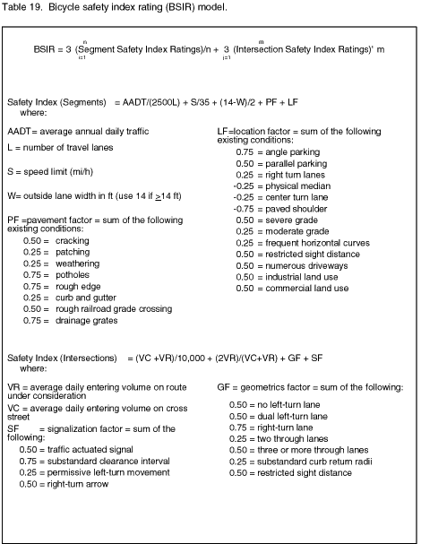

Bicycle safety index rating
One of the first modeling attempts was the bicycle safety index rating (BSIR) model developed by Davis.2 The purpose of the model was to relate bicycle safety to the physical and operational features of the roadway. While no specifics were provided regarding how the association of variables within the model was determined, there was an explanation of why specific variables were included. In determining which of the variables to include in the model and the form that the variable would take in the model, three criteria were established:
1) The variable must have direct application to the evaluation of mixed vehicle (i.e., motor vehicles and bicycles) operations.
2) The variable must be quantifiable either through a direct measure or an assigned rating.
3) The variable must be consistent with established data collection practices of local transportation departments.
The developed model is made up of two submodels, one for roadway segments and one for intersections (see table 19). The roadway segment submodel is to be used to evaluate uniform segments of roadway between major intersections along a predetermined highway. The intersection submodel is to be used to evaluate the major intersections along this same highway. The overall index for the highway can then be determined by summing all of the individual intersection and roadway segment index values and dividing by the total number of intersections and roadway segments.
This approach produces an average value across the roadway being evaluated and gives equal weighting to roadway segments and intersections.
The roadway segment model included variables for traffic volume, speed limit, outside lane width, pavement conditions, and a variety of geometric conditions. Motor vehicle traffic volume was deemed important as it provides some indication of complexity related to the bicyclist: "the more traffic present on the roadway, the more difficulty a bicyclist will have making left turns, watching for opposing movements, and being noticed by motorists." The average annual daily traffic (AADT) volume was selected as the motor vehicle volume to be included in the model, primarily because it is a variable collected by most transportation departments.
Combined with AADT in the model is the variable number of travel lanes. The traffic volume per travel lane has been used in previous studies and proved to be a good indicator of interaction conditions for bicyclists with passing motorists.11 In the model, AADT and number of travel lanes are combined as one of the additive factors as follows:
AADT/(L*2500)
Thus, any AADT that results in a travel lane volume of more than 2500 vehicles per day (vpd) will create a value greater than 1.0. For example, a two-lane road with an AADT of 7000 would result in a factor of

1.4. In contrast, a roadway segment with a travel lane volume of less than 2500 vpd will result in a value less than 1.0. The speed limit of the roadway was also included in the model for two reasons. First, it was believed that speed limit provided some reasonable indicator of the design speed of the roadway. Second and more importantly, it was believed to provide some indication of travel speeds of motor vehicles, which directly relates to the speed differential between motorists and bicyclists. While these reasons for using speed limit are sound and the need for some measure of motor vehicle speed is needed in the model, the reasoning does not necessarily hold true for all roadways. In a recent Federal Highway Administration (FHWA) study, 85th percentile speeds on a variety of rural and urban, two-lane and multilane roadways was found to be from 6 to 14 mi/h over the posted speed limit.12 This is not surprising considering the number of factors that are often considered when a speed limit is set. Another recent study found that while the 85th percentile speed is often used as the principal criterion, engineering judgment and the consideration of other factors often results in the establishment of arbitrary speed limits that do not reflect travel speeds.13
The additive factor containing the speed limit variable within the model was written as follows:
S/35
From previous research, it had been shown that speed differentials between motorists and bicyclists remain fairly constant (between 10 and 15 mi/h) up to motor vehicle speeds of approximately 35 mi/h.14 In another study, it was shown that more than 50 percent of all bicycle fatalities occurred on roadways with posted speed limits greater than 35 mi/h.15 Thus, 35 mi/h was selected as the denominator in the speed limit factor within the model. Any roadways with a speed limit of 35 would produce a factor of 1.0; speed limits of 30 and lower would produce factors less than 1.0 and posted speed limits of 40 and higher would produce factors greater than 1.0.
The outside or curb lane width was the next variable included in the model. This variable was included since it determines the travel space available for bicycling within the roadway and the space available for an overtaking motorist who desires to remain in the curb lane during the maneuver. Curb lane widths of 14 ft were cited from two sources as being the desirable width to provide safe bicycling conditions.16,17 The variable is presented in the model as follows:
(14-W)/2
As noted in the variable definitions presented with the model above, any lane width greater than 14 ft will still use a value of 14 ft within the model, i.e., 14 ft is the maximum value that can be used in the model. Based on this definition, any lane width greater than or equal to 14 ft will produce a factor of zero. One problem with this restriction is that no benefit is gained from curb lane widths of 15 ft or greater. If larger values were used, a negative value would be produced, which would reduce the index value. Lane widths less than 14 ft will produce positive values that will add to the index. For example, a lane width of 12 ft would produce a positive factor of 1.0.
Pavement condition was the next variable included in the model. This variable was included because defects or irregularities in the paved surface can affect the comfort and safety of bicyclists. As noted in the variable definitions presented with the model above, eight different conditions are provided to define detrimental pavement surfaces. Each of these conditions has a value assigned to it. An explanation of how these values were derived was not provided. An examination of the values, however, does seem to indicate that some degree of relative importance was assigned within the factor itself. For example, potholes, rough edges, and drainage grates are perhaps the most dangerous to bicyclists and, thus, were assigned the largest value (0.75). Patching, weathering, and curb and gutter on the other hand, are not nearly as problematic for bicyclists and were assigned a value of 0.25. The other conditions (rough railroad crossings and cracking) were considered to fall in between the two extremes and were assigned a value of 0.50.
The last factor in the model is the location factor, which incorporates a variety of measures related to both geometrics and operations along a roadway segment. Those for bicyclists were assigned a positive value while those conditions which potentially improve bicycle safety were assigned a negative value. For example, parking along the roadside, grades, restricted sight distances, and driveways all received positive values. Paved shoulders and physical medians received negative values. As with the pavement factor, no detailed explanation was given regarding how these assigned values were derived, but there does seem to be relative importance among the operational and geometric conditions present within the factor. The condition perceived to be the most beneficial was the presence of a paved shoulder, with a value of -0.75, while the condition perceived to create the greatest safety hazard was angle parking, with a value of 0.75.
As with the roadway segment model, traffic volume was deemed important at the intersection because it provides some indication of the level of complexity. The first factor is intended to simply provide a number relative to the total entering volume at a given intersection. If this volume is greater than 10,000 vpd, the factor will be greater than 1.0, indicating a more difficult intersection for the bicyclist. The second volume-related factor is intended to provide some indication of the level of difficulty that would be experienced by a bicyclist on a low-volume street crossing a high-volume street or vice versa. As an example, assume a bicyclist on a street with an entering volume of 20,000 vpd is crossing a street with an entering volume of 5,000 vpd. The factor for these conditions becomes 1.6. If the bicyclist is on the low-volume roadway and is crossing the high-volume street, the factor becomes 0.4. Intuitively, this factor appears to provide an opposite result of what is expected; in most cases, exclusive of signalization and geometrics, one would hypothesize that it would be more difficult for the bicyclist to cross the high-volume roadway than the low-volume roadway. Again, there is no explanation regarding the development of these factors. Thus, a full understanding of what the author intended the factor to represent is difficult.
The geometrics variable is the next factor included in the model. This variable was intended to quantify the traffic maneuver complexity of the intersection. The number of lanes and type of lane are the predominant variables included in this factor, with a right-turn lane being given the highest value of 0.75. This probably reflects the fact that the provision of such a lane for motor vehicles produces a weaving situation for motorists turning right and bicyclists proceeding through the intersection. Restricted sight distance and substandard curb radii are also geometric variables that should be considered as part of the factor.
The last factor in the intersection model is the signalization factor. These factors are intended to indicate how signal operations at a specific intersection may impact upon the safety of the bicyclists. If a signal is actuated, it is considered to have a negative impact on bicycling safety resulting from the fact that bicyclists often cannot be detected by the detection loops.18 This fact, in turn, can result in the bicyclist crossing against the light and putting him or herself in a dangerous situation. If the clearance interval is sub-standard, i.e., not long enough for bicyclists, a value of 0.75 is used. A value of less than 4.0 s is considered substandard in the model. Finally, if permissive left turns are allowed or if right-turn arrows are present, conditions are present that may require motorists to yield to bicyclists, which may create a hazardous situation.
A case study using the developed models was conducted in Chattanooga, Tennessee. A total of seven roadways consisting of 21 uniform segments and 29 major intersections were included in the study. The appropriate indexes were computed for each segment and intersection and then combined to form the overall index rating (BSIR) for each roadway. The ratings produced for the seven roadways ranged from 4.46 to 6.54. Relative comparisons were made between each individual rating and the other six ratings. On the basis of the author’s knowledge of the roadways selected and the ratings produced from the models, a classification scheme was developed to define bicycle operation based on the BSIR values (see table 20). Of the seven roadways included in the case study, two were classified as "good," three were classified as "fair," and two were classified as "poor."
Table 20. Rating classifications for the bicycle safety index rating (BSIR).3
|
Index Range |
Classification |
Description |
|
0 to 4 |
Excellent |
Denotes a roadway extremely favorable for safe bicycle operation. |
|
4 to 5 |
Good |
Refers to roadway conditions still conducive to safe bicycle operation, but not quite as unrestricted as in the excellent case. |
|
5 to 6 |
Fair |
Pertains to roadway conditions of marginal desirability for safe bicycle operation. |
|
6 or above |
Poor |
Indicates roadway conditions of questionable desirability for bicycle operation. |
As noted by the author, these indexes are not definitive values, but instead assign general designations to roadways that can be used in determining bicycle routes, preparing bicycle maps, or prioritizing improvements for bicycling. While this study provides a good starting point for examining specific variables that may be important to bicycle operations, it was not able to conclusively define how important specific variables were to either bicycle safety or operations. First, there was no bicycle accident analysis conducted on any of the segments included in the case study. Thus, the term bicycle "safety" index rating is misleading. While there is no argument that many of the factors included may impact upon the safety of bicyclists operating concurrently with motor vehicles, the validation of how these factors actually impact upon safety was not performed. Second, the classification scheme developed was based entirely on the relative differences in the indexes produced and the author’s knowledge of the routes. This method of developing a classification scheme is problematic from the standpoint that: 1) it relies on the subjective judgment of the author to establish the scale of what is considered excellent, good, fair, or poor; and 2) the classification scheme may not be transferable to other cities or even other locations within the city since the relative differences between the sites used played a large part in establishing the scheme.
Finally, there is the problem of combining the results from the two submodels into a single rating. Since the final result was simply an average of all intersection and segment values produced for the roadway, it was assumed that roadway segments are equivalent to intersections in terms of safety or operational difficulty for the bicyclist. Recent work has shown that 50.4 percent of all bicycle accidents occur at intersections or are intersection related.19 An additional 21.4 percent of the bicycle accidents occur at other types of junctions, such as driveways. These results indicate a need to perhaps weight intersections significantly more when combining results. It is also possible that the two scenarios, intersections and segments, cannot be combined; they are simply too different in terms of the maneuvers required, the type and number of conflicts encountered, and the overall geometric and operational conditions.